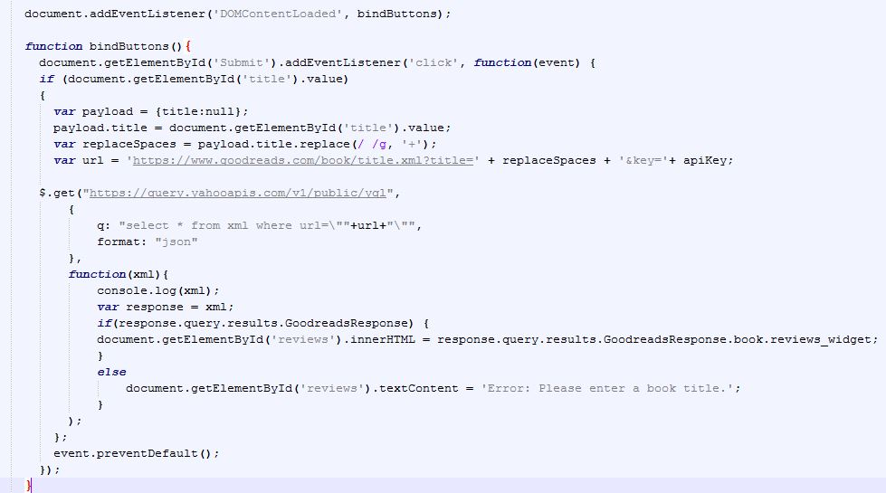

The very first thing you need to get started with the Goodreads API is to get a developer key. You can register for one here.
Once you have a key, you're ready to get started.
Goodreads has a fairly good reference library regarding the calls you can make, complete with example URLs, but it does not go into depth on how we can use these things, which is what we'll be doing here.
First, you should know that Goodreads does not support CORS [Cross-Origin Resource Sharing] at this time (more about that here), because of that, we will need to use a proxy to get the information that we need without Goodreads thinking we are attacking it and for that reason we need to use a little bit of JQuery. For my examples, I'll be using Yahoo YQL as my proxy. It is free, does not require a developer key, and allows you to return JSON objects (or XML, if you feel like it), which is exactly what we need. Results are wrapped inside of //query/results/GoodreadsResponse, so there is a little bit more typing when actually accessing the data, and it is a little bit slower since , but overall is not a bad workaround until Goodreads decides to support CORS. So here we go.
For the first example, we will look at how to retrieve reviews for a given book. Please see the example code below.

So let's talk about what we're doing here. We start with an event listener to know when the user clicks the submit button. After, we create a variable to hold our title. We set the title to be the value typed into the field in the form. Next, we need our Goodreads URL. This varies for each API call based on the information that you want to receive back. You can see a list here. This example is fairly simple - we just need our title and API key, which you got a little bit earlier.
Here is where it gets a bit complicated. Goodreads not supporting CORS makes things difficult for us, so our GET request is a bit longer, but roughly the same as a regular call. Instead of just passing in the url, we pass in the Yahoo YQL url first and then set the query to the Goodreads url and bring it back in JSON format (which we will talk about a little bit later). Once the call is complete, you can log to your console to see exactly what you're getting in your JSON object, and then you can use it to display your results. A bit earlier, I explained how our response code would be a bit longer due to the proxy call, and this is where that comes in. Here, I created a variable to hold the JSON object to make it a tiny bit shorter. Next, we make sure that there was actually a response received, and if it was, we return the reviews widget provided by Goodreads!
Give it a try using the form below. Just enter a book title and hit submit. The Goodreads widget to display reviews will display!
On the next page, I'll explain a bit of what's going on with the JSON we receive...